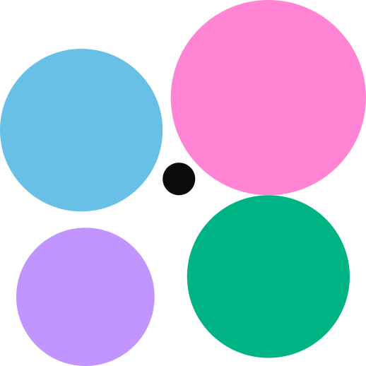
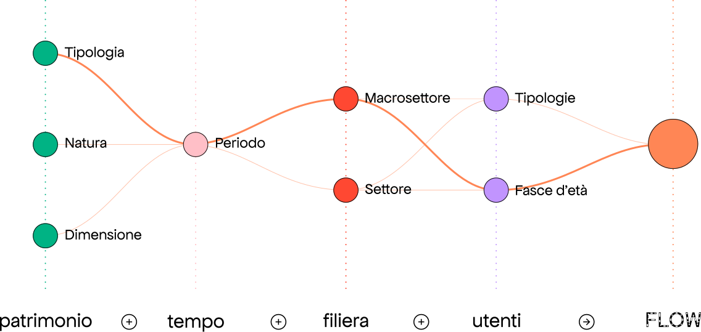

EMILIA-ROMAGNA · PATRIMONIO CULTURALE E CREATIVO
Leggere il patrimonio diffuso per un turismo sostenibile
Heritage Flow è una piattaforma digitale per la lettura del patrimonio culturale e creativo a supporto di un turismo sostenibile. Racconta in forma visiva, con dati qualitativi e quantitativi, il patrimonio materiale e immateriale dell’Emilia-Romagna.

A CHI SI RIVOLGE
Decisioni informate, per chi governa e promuove il territorio
La piattaforma si rivolge in particolare agli operatori turistici e agli enti locali, offrendo loro un supporto puntuale e informato ai processi decisionali.
Heritage Flow restituisce una lettura strutturata e dinamica del patrimonio diffuso del territorio, spesso poco visibile nel suo insieme, e ne fa emergere le connessioni potenziali con altri patrimoni, servizi, luoghi e stakeholder.
In questo modo contribuisce a orientare scelte di valorizzazione capaci di coniugare attrattività, tutela e sostenibilità.
- Operatori turistici
- Enti locali
- Attrattività
- Tutela
- Sostenibilità
IL PROGETTO
Patrimoni nascosti che meritano di essere valorizzati
Heritage Flow mira a raccontare il patrimonio diffuso dell’Emilia-Romagna tanto nelle sue forme materiali quanto in quelle immateriali, avvalendosi di dati qualitativi e quantitativi.
-
Pratiche artigianali
Le competenze e i gesti di bottega che si tramandano nel tempo.
-
Saperi tecnico-industriali
Le conoscenze che hanno reso nota la Motor Valley.
-
Beni storici e culturali
Le memorie che raccontano la storia del territorio.
Nuovi flow turistici
I patrimoni contenuti all’interno della piattaforma vengono riletti assieme a chi detiene tali patrimoni con la finalità di scoprire potenzialità inedite.
Allo stesso tempo dati anagrafici, periodo temporale, esperienza di fruizione ed ecosistema di relazioni diventano strumenti per generare nuovi flussi narrativi e di relazione.
